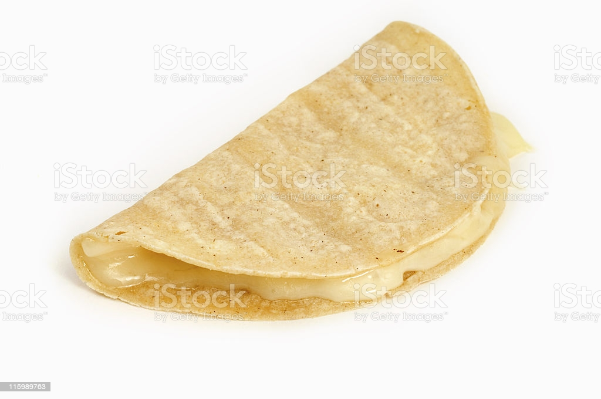

Quesadillas

It's easy, it's quick, it's delicious, it's nutritious!
Ingredients
- Cheese or cheese substitute
- Corn tortillas (or flour if you insist)
- Any toppings you want
Steps
- Oh yeah, fire up a pan on low-med heat, no oil!
- Put your tortillas in the pan with your bare hands, don't be a wuss
- After about a minute, flip the tortillas over, and place all the cheese on one side (make sure it's not so much that you wouldn't be able to fold it later)
- If you have any vegetables or whatever you like, add them as well
- Fold the other half on top of the cheese and stuff, then flip
- Flip a couple times over the span of a minute or two, until the cheese melts
- Serve up some salsa or just go at them caveman style, like I do. Enjoy!